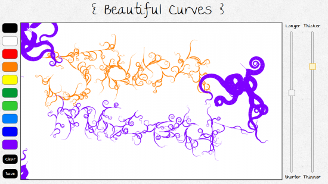

Beautiful Curves is a really nice web based tool for creating pretty drawings. 
No doubt you will do what I did and either write your name or draw a face!
It wins in the coolness category too as it’s built using canvas/JS so it’s open source and free to play :)
Nice!